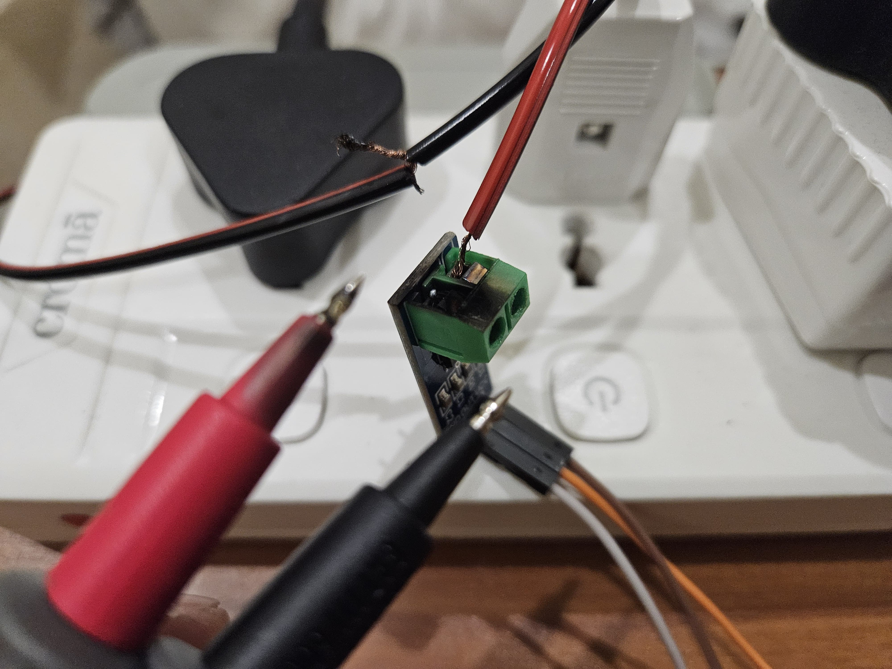

Empowering sustainable energy practices through innovation and technology
Our Mission
To develop a reliable and intuitive energy management system that empowers users to monitor, optimize, and save energy efficiently. By leveraging technology and innovation, we aspire to create a greener and more sustainable future.
Did We Face any Challenges?
Component Variability: Different circuits required different components, complicating the design process.
Damaged Sensor: A spark ignited during testing, which led to the failure of the ACS712 sensor.
Wrong Choice of sensor: We chose ACS712 instead for contactless SCT013 current sensor.

Tools and Softwares Used:
SCT013 current sensor
ZMPT010b voltage sensor
ESP32 Microcontroller
Arduino IDE
Blynk platform
VS Code for Developing website
Partial Results (till Phase 2):
ACS-712 (5A) Current Sensor Circuit: The results weren’t entirely accurate. The current readings unexpectedly increased when current passed through the bulb.
ZMPT101B Voltage Sensor Circuit: The results weren’t perfect. The voltage increased from 0.81V (residual) to 9.52V–9.7V under load, which wasn’t fully expected.
Blynk Dashboard: Successfully created a dashboard using Blynk that allows real-time monitoring and control of the system.
Final Results:
SCT013 Current Sensor: Provided appropriate values when On and Off.
ZMPT101b Voltage Sensor: Delivered accurate readings when On and Off.
Blynk Integration with Sensors: Successfully displayed Current, Voltage, and Power values on the Blynk dashboard, matching the serial monitor.
Web Development: Created a unified website/platform for all devices, redirecting users to respective dashboards upon selection.